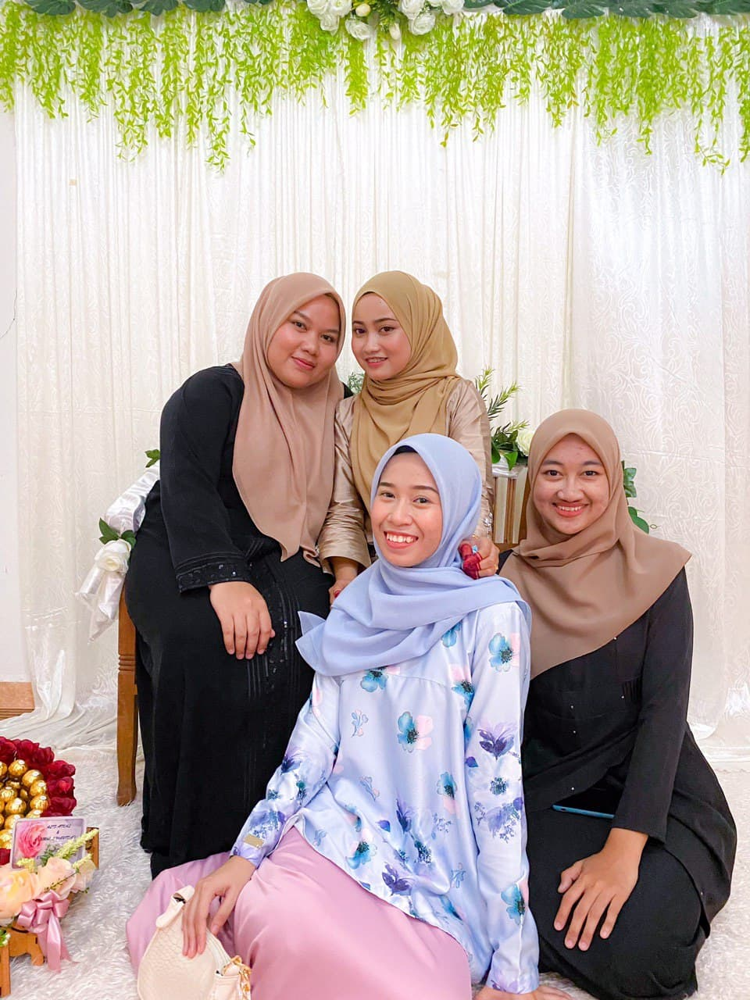
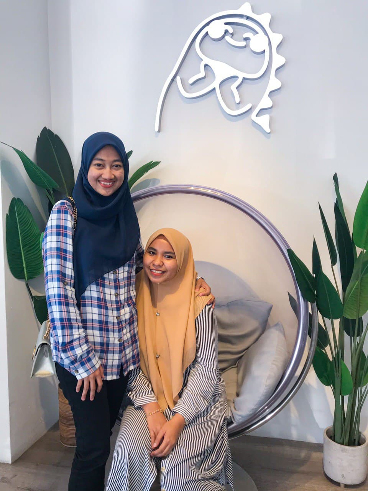

Hello everyone. This is me Syahira. I'm such a queit person. Introvert. As i grow older, i wish nothing but happiness and peace for myself. I am not going to talk about my family because everything about family, i prefer to keep it private. So, today i want to write about my best friends and i. It is said a friend in need is a friend indeed. This is my favourite idiom about friendship. An ideal friend possesses all the qualities of head and heart. It is easy to be friend with anybody but difficult to have a friend who match your heart, who you can be crazy with. I'm not good at communicate, so its hard for me to have new friends. I dont really have many friends, just a few close friends. It is good to have small circle of quality friends, so you can be yourself more when you are around true friends, can open up about everything without being judge, and you glow differently when you are happy with people who brings positive vibes. My world appears to be gloomy in the absence of true friends. I am forever grateful for them. Someone who always there when i need someone to talk to, someone who can make me laugh when i'm sad and someone who i can share my hopes, dreams, tears and fears (and my ugly selfies too). So, pictures below showed my best friends and I:


Personal Obsession
Next, my personal obsession. Everyone has their own obsession, so does me. I have lots of obsessions such as music, watching Korean dramas, reading but what i really obsessed is football. I have huge crush on Cristiano Ronaldo since i was 12 years old. He is the main reason I start watching football. I hope one day I can make my dreams come true where I want to visit all the football stadiums in Europe and of course I want to meet Cristiano Ronaldo too!!